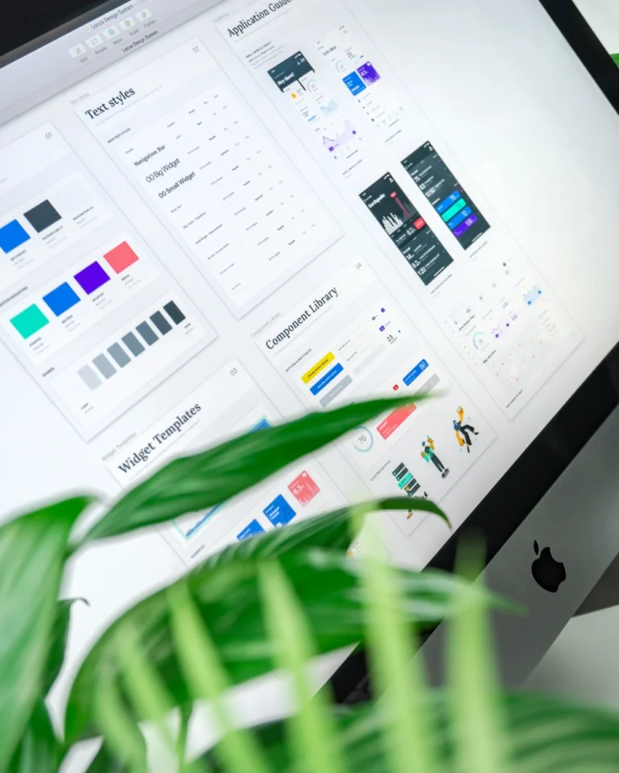
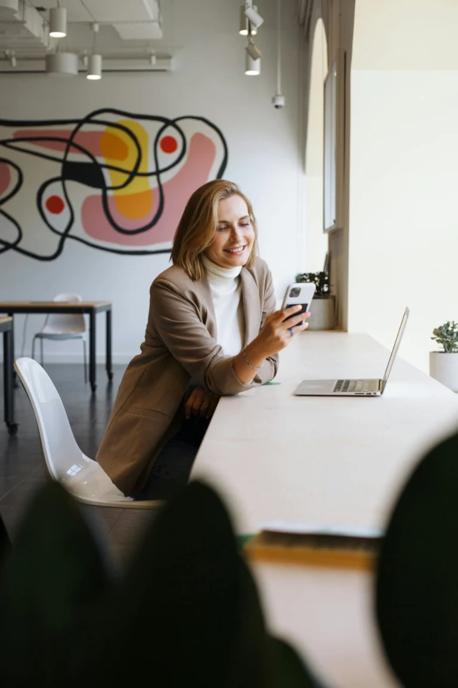
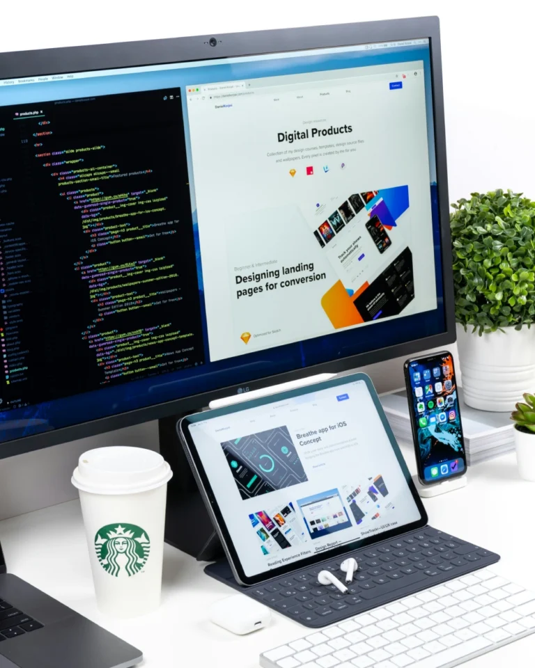
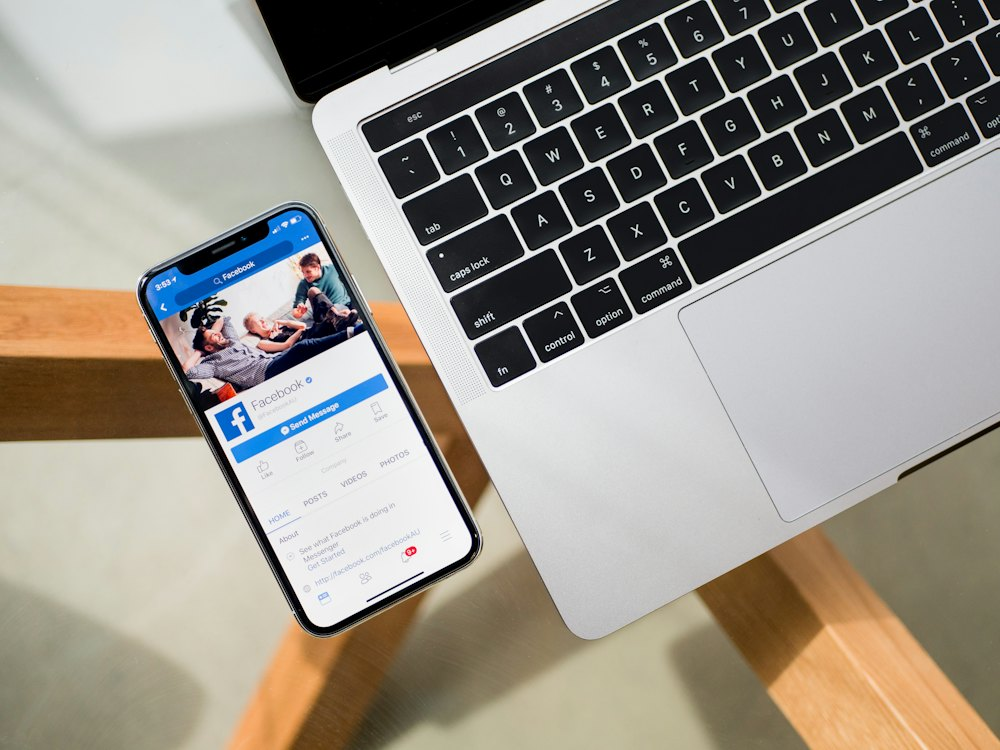
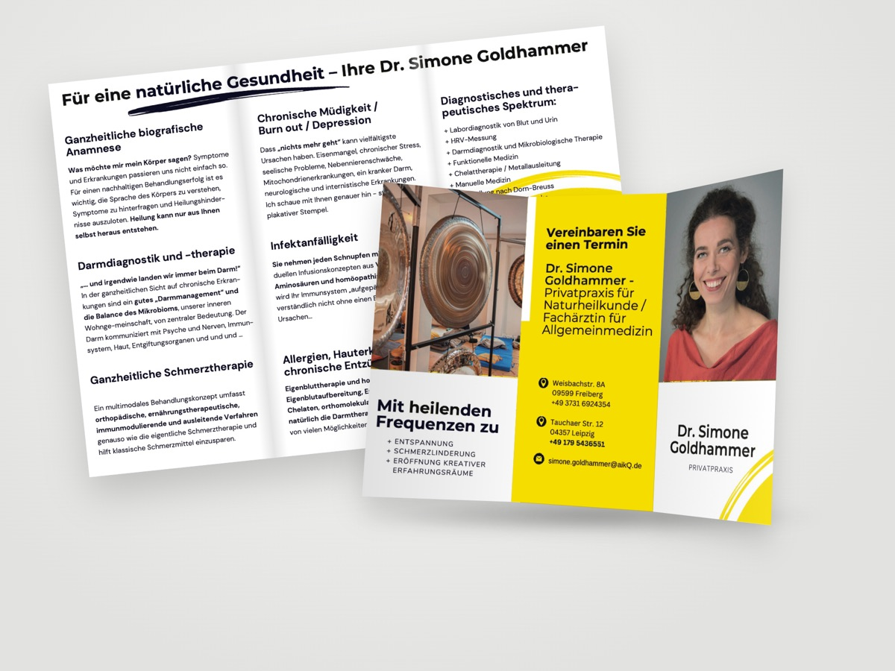
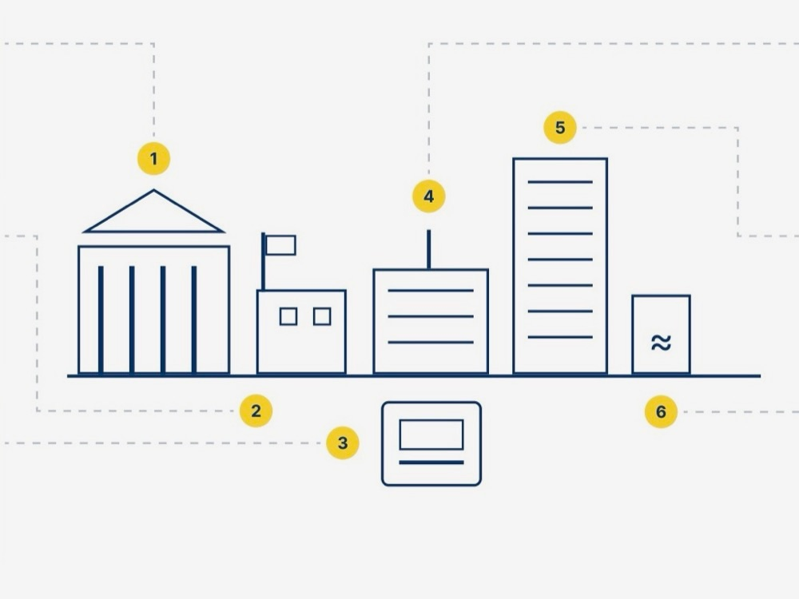
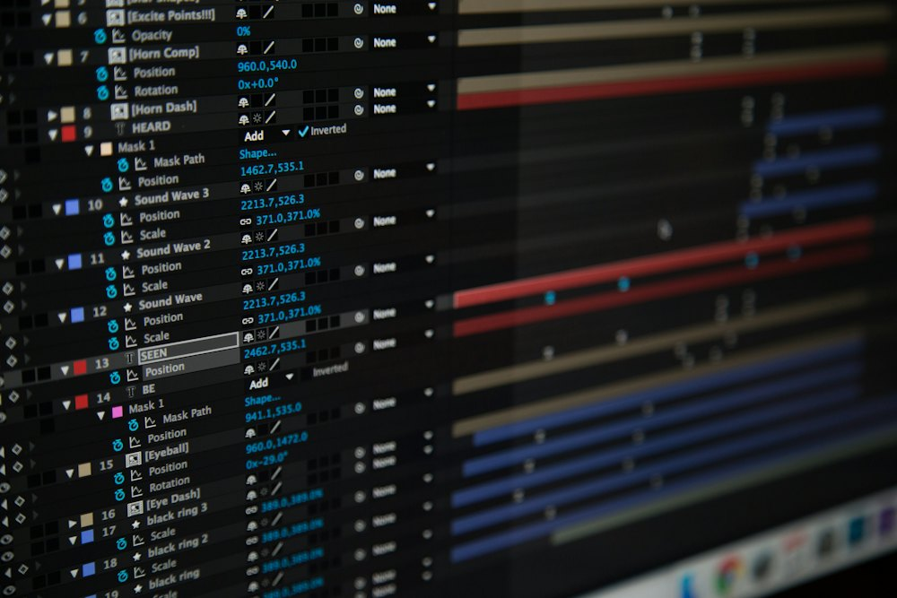
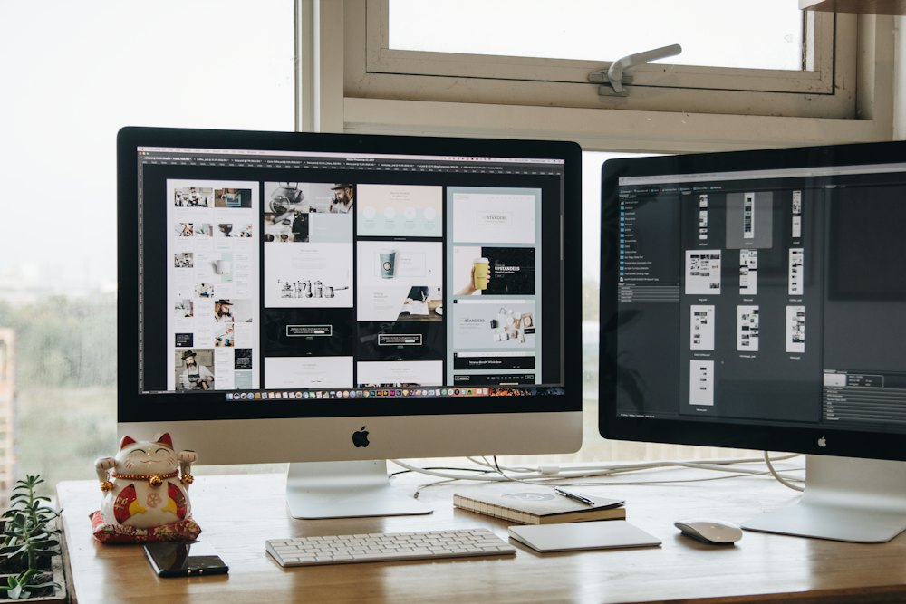
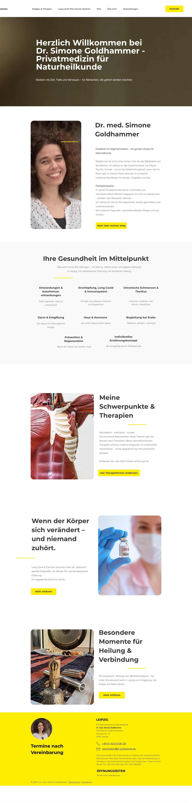

Wolfgang Bauer Ingenieurbau
- Strategie
- Rebranding
- Website-Redesign
- Webentwicklung in Kadence
- Unternehmenspräsentation
Unternehmenspräsentation
Demokratie braucht Sichtbarkeit. – kostenfreie Websites für Vereine, NGOs, Kunst und Kultur.
Mehr erfahrenBranding, Websites, UX & KI-Lösungen für Unternehmen & Selbstständige
Projekt anfragen Zu den Leistungen
Ihre Website ist Vertriebsinstrument. Sie entscheidet mit, ob aus Besuchern und Besucherinnen Kundinnen und Kunden werden. Ich gestalte Websites und digitale Produkte, die intuitiv führen, klar strukturiert sind und messbar wirken. Von der Strategie bis zur technischen Umsetzung aus einer Hand.
Ich bin Anna Härtelt, UX/UI-Designerin, Strategin und Webentwicklerin. Seit 2020 begleite ich mit STUDIO AAH! mittelständische Unternehmen und Start-ups aus Deutschland und der Schweiz im B2B-Bereich, unter anderem aus Software, Cyber Security, Gesundheitswesen und Bauingenieurwesen.
Anna Härtelt
Gründerin STUDIO AAH!

BrandEine unverwechselbare Markenidentität, die bei Ihrer Zielgruppe wirklich ankommt – klar, glaubwürdig und zukunftsorientiert.
UI/UXDigitale Erlebnisse, die Nutzer:innen verstehen – vom Expert Review bis zum Designsystem für Webanwendungen, SaaS und Apps.
WebsiteKlares Design mit technischer Präzision – individuell, responsiv und auf Ihre Ziele ausgerichtet.
Marketing & VertriebSichtbar werden, wo Ihre Kund:innen sind – mit klarer Positionierung und Inhalten, die zu Ihnen passen.
PrintProfessionelles Design für Gedrucktes – von der Visitenkarte bis zur Unternehmenspräsentation.
Illustration & InfografikIllustrationen, Icons und Infografiken, die komplexe Inhalte auf einen Blick verständlich machen.
Motion DesignBewegte Grafiken und Animationen für Website, Social Media und Präsentationen.
RetainerBetreute Weiterentwicklung Ihrer Website: neue Texte und Bilder, Unterseiten und Abschnitte, ab 65 € pro Stunde.KI & DigitalisierungKI-Check und Beratung: welche KI Ihrem Unternehmen im Alltag wirklich hilft.Grundlage für alles, was ich gestalte: die Corporate Identity
Für mittelständische Unternehmen, die ihre ganze Website umbauen: mit Leistungs-, Branchen-, Referenz- und Karriereseiten.
Für Selbstständige und kleine Angebote: eine Website, die alles auf den Punkt bringt, und eine Marke, die zu Ihnen passt.
Kostenfreie Websites für Vereine, NGOs, Kunst und Kultur. Du zahlst, was es dir wert ist.
Ist-Analyse mit Brand Experience über alle digitalen und analogen Touchpoints, Expert Review Ihrer Website sowie Markt- und Mitbewerberrecherche.
Im Gespräch klären wir Bedarf, Branche und Zielgruppe und legen die Ziele fest.
Research, Look and Feel und Prototyp in Figma, danach die Umsetzung in WordPress (Kadence) oder Claude Code.
Ihre Website geht live.
Lösungen, die meine Kund:innen sichtbar machen.

 Franziska WeihmannGründerin von Deinetwegen HR
Franziska WeihmannGründerin von Deinetwegen HR„Ich durfte mit Anna meine neue Website realisieren – und was soll ich sagen: absolute Herzensempfehlung!“

Klingt gut – sagen jedenfalls andere.
Ich durfte mit Anna meine neue Website realisieren – und was soll ich sagen: absolute Herzensempfehlung! 💛 Neben ihrer strukturierten und zuverlässigen Arbeitsweise hat mich vor allem ihr Gespür für UX & Design begeistert. Sie denkt nicht nur technisch, sondern fühlt sich in Zielgruppen, Markenwelten und Nutzerbedürfnisse ein.
Das Ergebnis: Eine Website, die nicht nur funktioniert, sondern sich auch richtig gut anfühlt – klar, stimmig und mit Liebe zum Detail.
Wer eine Partnerin sucht, die Webentwicklung und UI/UX Design wirklich ganzheitlich denkt, ist bei Anna in den besten Händen!
Franziska Weihmann
Anna beeindruckt mit ihren kreativen Visionen und ihrem Blick für Details. Sie hat die Fähigkeit, komplexe Benutzeranforderungen in intuitive und ansprechende Designs zu übersetzen. Klare Empfehlung und eine Bereicherung für jedes Team.

Ines Gottschalk
"Anna ist eine außergewöhnlich sorgfältige UX-Designerin, die sich durch ihre schnelle Auffassungsgabe und Problemlösungsfähigkeit auszeichnet. Sie hakt immer nach, um sicherzustellen, dass keine Details übersehen werden, und geht systematisch an Herausforderungen heran. Ihre Designs sind nicht nur visuell ansprechend, sondern auch äußerst funktional und nutzerzentriert. Es ist beeindruckend, wie schnell sie komplexe Zusammenhänge erfasst und innovative Lösungen entwickelt. Anna ist eine wertvolle Bereicherung für jedes Team."
Ich habe mit ihr 8 Monate zusammen arbeiten dürfen. Es war mir immer eine Freude. LG, Carolin Schaefer

Carolin Schaefer
Anna Härtelt ist eine kompetente und inspirierende UX/UI-Designerin und Projektmanagerin. Während meiner Tätigkeit bei der Digitalbegleiter GmbH hatte ich das Glück, von ihrer umfassenden Erfahrung zu profitieren.
Sie hat mir nicht nur klare Aufgaben zugewiesen, sondern auch stets mit Rat und Tat zur Seite gestanden, wenn ich Unterstützung brauchte. Sie war immer bereit, meine Fragen zu beantworten, insbesondere zum Tool Figma, und hat meine Weiterbildung aktiv gefördert.
Ich empfehle Anna ausdrücklich als UX/UI-Designerin. Wer sie nicht bucht oder einstellt, wird definitiv etwas verpassen!
Anne Schreier
Während meiner Zeit als Werkstudentin bei der Digitalbegleiter GmbH hatte ich das Vergnügen, mit Anna im Design-Team zusammenzuarbeiten. Anna überzeugte mich von Anfang an durch ihre fachliche Kompetenz und ihren unermüdlichen Einsatz, unsere Projekte voranzubringen.
Besonders hervorzuheben ist Annas Engagement bei der Umstellung des Teams von Adobe XD auf Figma. Dank ihrer Initiative und ihrer sorgfältigen Einführung in das neue Tool verlief der Wechsel reibungslos und trug maßgeblich zur Effizienz und Kreativität im Team bei.
Ich würde jederzeit wieder mit Anna zusammenarbeiten und kann sie uneingeschränkt weiterempfehlen.
Neve Boldt
UX & Usability
Ein Jahr mit KI im Designalltag: Was sich an meiner Arbeit als UX/UI-Designerin und Webentwicklerin verändert hat, was gleich geblieben ist – und was das für Sie bedeutet.
Weiterlesen →Ratgeber
Für Sie, wenn Sie als Freelancer im Design arbeiten.
Weiterlesen →Design
Eine kuratierte Sammlung nützlicher Websites, Tools und Ressourcen für Webdesigner:innen, UX- und UI-Professionals – von Icon- und Farbtools über Typografie bis hin zu Designsystemen, Inspiration und Lernplattformen.
Weiterlesen →Design
Bilder machen eine Website lebendig – oder langsam. Wer das richtige Format wählt, spart Zeit, Daten und Nerven. Ein kleiner Leitfaden für alle, die Design lieben, aber Ladezeiten hassen.
Weiterlesen →Erstgespräch kostenlos & unverbindlich.